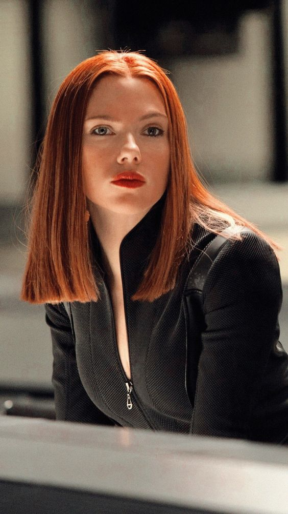

Галерея

Скарлетт Ингрид Йоханссон родилась 22 ноября 1984 года в Нью-Йорке. Стала известной после ролей в фильмах «Оставленные»,
«Прекрасное» и «Северное сияние». За свою карьеру она была номинирована на множество престижных наград и получила несколько наград, включая премию BAFTA и «Золотой глобус»
Она американская актриса и певица.
Чтобы посмотреть больше информации о ней вы можете посетить Википедия.